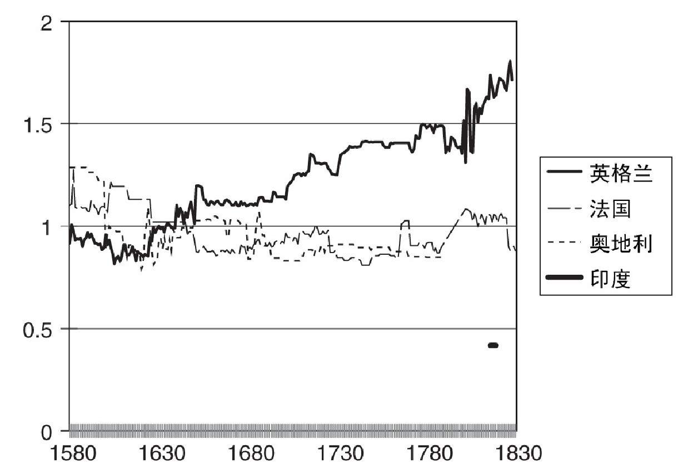

工业革命（大致时间为1760年至1850年）是世界历史的转折点，开启了经济持续增长的新时代。虽然这一时期被冠以革命之名，但它并非历史进程的突然变化，而是早期近代经济转变的必然结果，上一章我们已经对此有所讨论。从1760年算起的一百年里，年经济增长率保持在1.5%左右。相比近年来的经济增长奇迹（国内生产总值增幅保持在8%至10%），当初的发展速度可以说是十分缓慢。然而，那个时候英国一直在拓展世界技术的前沿领域，比起其他国家通过引进技术来追赶领头羊（这正是它们能够飞速发展的原因），创新者的脚步总是要缓慢一些。而且，英国工业革命的伟大之处在于，它缔造了持续的经济增长，使得国民收入不断累积，最终达到如今的普遍繁荣。
技术变革是工业革命的动力。当时出现了许多著名的发明，比如蒸汽机、纺织机和新的炼钢技术（用煤炭取代木材作为燃料）。此外，许多机器在改进之后操作更为简便，从而提高了普通产品（比如帽子、大头针和钉子）的生产效率。还有大量新产品问世，其中多数产品像韦奇伍德瓷器一样，受到了亚洲同类产品的启发。
在19世纪，工程师全面拓展了18世纪机械发明的应用范围。随着铁路和蒸汽船的发明，蒸汽机被用于交通运输。动力驱动的机械最初只用于纺织厂，后来被普遍应用到整个工业领域。
问题是：为什么这些具有革命意义的技术出现在英格兰，而不是荷兰或法国，甚至中国或印度？
工业革命发生在一个有利于创新的、特定的政治文化背景中，这一背景或许能解释工业革命的起源。
英国的宪法体系被欧洲的自由党人和当代经济学家奉为典范。这一体系远谈不上民主：只有3%至5%的英国人有选举权，苏格兰人的比例甚至更低。大部分权力依然归属国王，尤其是宣战和停战的权力。虽然宪法赋予了议会拒绝为战争筹措资金的权力，但议会从未动用这一权力。
英国的宪法体系有许多利于经济增长的特点，不过当代经济学家并没有强调这些特点，他们更重视限制税收和保障私人财产。事实上，英国议会拥有的至高权力造成了相反的结果。虽然法国的君主政体被称为绝对君主制，但法国国王并不能在未经允许的情况下增加税收，正是公共财政危机迫使路易十六于1789年召开三级会议，并最终导致了法国大革命。法国贵族不用交税，而英国议会于1693年引入土地税，不仅平民要缴纳，议员也不能例外。不过，绝大部分税收来自消费税，征收对象既包括啤酒之类的国内消费品，也包括糖和烟草之类的进口商品。这些税收主要由工人来负担，因为他们在议会中无人代言。英国议会或许压制了王权，但在缺乏民主机制的情况下，谁又能压制议会的权力呢？
结果，英国政府征收的税额平摊到每个人头上，大约是法国的两倍。同时英国用于开支的国民收入份额也大于法国。这部分支出是否起到了促进经济增长的作用，还尚无定论。大部分开支用于陆军和海军。前者偶尔会被派往国外，但主要任务是随时待命，镇压反对使用机械或倡导民主的群众集会，确保国内秩序稳定。海军的任务是拓展大英帝国的版图，促进贸易。就连工人也能从中获益，因为帝国模式是高工资经济体系的基础，这一体系通过技术革新来节省劳动力，从而促进经济增长。如果法国的路易十六有权征税，或许他就用不着根据战争或和平状态来调整法国海军的规模，在扩张和收缩之间摇摆不定；相反，他可以让海军随时待命，以促进法国的经济繁荣。
英国议会有权剥夺人民财产，哪怕当事人并不情愿，这样的权力也有助于经济增长。在法国，这绝不可能。事实上，因为私人财产受到过度保护，法国处于不利地位，普罗旺斯没有建设有利可图的灌溉项目，因为英国议会有权颁布私法法例，但法国却无法颁布类似法令。有了这些私法法例，英国政府就可以无视财产所有人的意愿，实施圈地运动，也可以建设穿过这片土地的运河或高速公路。光荣革命实际上意味着英国政府有了永久的“专制权”，它“在1688年之前只能间或动用……但此后却可以一直享有”这份权力。
除了合适的政治体制，新兴的科学文化同样有利于工业革命。在17世纪的科学革命中，产生了关于自然世界的若干重大发现；到了18世纪，发明家将这些科学发现应用到实际生产中。此外，自然哲学的成就让人们开始信奉科学方法，认为世间万物自有其规律，我们可以通过观察来发现这些规律，并且用它们来改善人类的生活。在这些成就中，最伟大的当属牛顿提出的太阳系模型，它促使有识之士转变思想，重新看待宗教和自然。
究竟通俗文化在多大程度上促成了类似的思想转变，这尚无定论。一方面，重要的例子表明，一些工人出身的发明家采用了牛顿提出的模型。比如，约翰·哈里森从一位牧师那里借到了桑德森论自然哲学讲座的文稿，并且复制了一份，这是一本宣扬牛顿学说的小册子。哈里森对于牛顿学说的兴趣是否促使他最终发明了计时仪器呢？另一方面，当时的人们对于巫术依然怀有浓厚的兴趣，中世纪时，巫术可是科学的替代品。很可能，相信巫术的人要多于相信牛顿力学定律的人。约翰·卫斯理的布道吸引了数千万信徒，在他看来，“放弃了巫术就等于放弃了《圣经》”。
比起牛顿的《数学原理》，社会变革对于通俗文化产生了更为直接的影响。最剧烈的变化莫过于城市化和商业的发展。这些变化使得读写和计算能力具备了更大价值，从而激励更多人掌握了这些能力。到18世纪时，大部分手工匠人、店主、农夫以及相当部分的体力劳动者都让他们的儿子接受几年时间的初等教育。有许多女孩子同样接受过学校教育。结果就是，公众能够阅读报纸，并且更懂得政治。这是一个全新的世界，像托马斯·潘恩这样的激进人士能够通过销售数十万本《人的权利》而名扬天下。
欧洲各地对于科学发现都有所了解，各国上流社会普遍对自然哲学怀有热情。因此，文化发展并不能解释为什么工业革命发生在英国。实际上，真正的原因在于英国独特的工资和价格结构。英国的高工资和廉价的能源经济使得英国企业可以通过发明并使用新技术来获取利润。
在第一章和第二章中，我们已经看到，英国的工资水平很高，大多数人买得起面包、牛肉和啤酒，不至于靠着燕麦粥勉强度日。更重要的是，就技术而言，英国的工资相对于资本价格来说比较高（参见图7）。16世纪晚期，在英格兰南部、法国和奥地利（这些是欧洲大陆具有代表性的地区），工资与资本服务价格的比率大致相当。然而，到了18世纪中叶，英格兰的劳动力/资本比率比欧洲大陆要高出60%。到19世纪初，首次有了亚洲的数据。比较的结果是，印度的劳动力/资本比率比法国的或奥地利的更低。因此，印度更加缺乏经济激励，不愿意采取机械化方式进行生产。

图7 工资相对于资本服务价格的比率
这一现象与能源的状况类似。英国（尤其是北部和中部的煤矿区）拥有世界上最廉价的能源。因此，相比世界上其他地区，在英国能源相对于劳动力要便宜许多。
正是由于工资和价格的这些差异，英国企业发现采用新技术有利可图，通过增加相对廉价的能源和资本，可以节约昂贵的人力成本。有了更多资本和能源，英国工人就能生产出更多产品——这就是经济增长的秘诀。在亚洲和非洲，廉价劳动力造成了相反的结果。
埃里克·霍布斯鲍姆有句名言：“谈论工业革命，就必然要说到棉纺织业。”这一行业始于18世纪中期，随后发展成英国最大的行业。1830年，它占到英国国内生产总值的8%，同时为英国制造业提供了16%的工作岗位。棉纺织业是最先采取工厂化生产的行业。棉纺织业的发展带动了曼彻斯特以及英国北部许多小城市的飞速发展。英国的扩张损害了印度、中国和中东地区的利益。当这些国家最终重新开始工业化进程时，它们最先发展的行业就包括了棉纺织业。
17世纪，中国和印度拥有世界上最大的棉纺织业。孟加拉、马德拉斯和苏拉特将当地的棉布运往印度洋彼岸，最远到达西非。亚洲和非洲到处都有小型棉纺织中心。17世纪末，各家东印度公司开始将印花棉布和平纹细布运往欧洲，这些布料在欧洲大受欢迎，与欧洲生产的主要布料亚麻布和毛料衣物分庭抗礼。由于棉布销量巨大，1686年法国甚至禁止进口棉布，英国也下令限制棉布的国内消费。不过，在西非有着巨大的海外市场，那里棉布可用来交换奴隶。在西非市场，英国布料和印度布料展开了竞争。
正是国际竞争最终带来了纺纱工序的机械化。棉布越精细，需要的纺织时间就越长。由于英格兰的工资水平太高，因此只有最粗糙的纺织品才能在价格上与印度布料竞争。精美的布料有着巨大的市场，但英格兰要想参与竞争，就必须发明机器来减少劳动力。其中的利益极其可观：1750年，孟加拉的纺纱量大约为8，500万磅/年，而英国只有300万磅/年。人们对于机械化生产进行了许多尝试。詹姆斯·哈格里夫斯于18世纪60年代中期发明了珍妮纺纱机，这是第一台在商业上取得成功的机械，随之而来的是理查德·阿克莱特的水力纺纱机。塞缪尔·克朗普顿于18世纪70年代发明了走锭纺纱机，这种机器结合了珍妮纺纱机和水力纺纱机的优点（因而得名“骡机”），成为此后一个世纪机械纺纱技术的根基。
这些机器与科学发现无关。没有一台机器用到了全新的理念。事实上，它们需要的是把多年来的机械改进与可靠实用的设计结合起来。托马斯·爱迪生的名言“发明是1%的灵感加上99%的汗水”正适用于棉纺织业。
要想解释工业革命为何发生在英国，最重要的就是要说明为什么英国的发明家花费如此多的时间和金钱来进行研发（研究和开发，也就是爱迪生说的“汗水”），以求让平淡无奇的想法能用于实践。这其中的关键就在于，他们发明的机器可以通过增加资本投入来减少劳动力。因此，在劳动力成本较高而资本价格较低的地方（即在英格兰）使用这些机器有利可图。这些机器在其他地方都没法获取利润。这就是为什么工业革命最终发生在英国的原因。
生产棉纱需要经过三个步骤。首先，打开大包棉花原料，去除其中的尘土和杂质。接着，对棉线进行梳理。具体而言，就是拖着棉线经过插满别针的卡片，把多条棉纤维并成一条疏松的粗棉线，这条线被称为无捻粗纱。最后，将无捻粗纱纺成细纱。在纺织机发明之前，带螺纹的纺织棒被用于生产细支纱，而手纺车被用于生产粗支纱。不论是生产细支纱还是生产粗支纱，都需要先拉直无捻粗纱，让它变细；然后再搓成绳子，让它变得更牢固；最后，将纱线绕在纺锤周围，一起交给织布工人。
所有这些工序都改由机械来完成。可以说，理查德·阿克莱特的最大成就就是设计出了一家小型工厂（克伦福德2号工厂），里面的机器按照合理顺序依次排列，后来英国、美国和欧洲大陆的早期棉纺织厂都参照这家工厂进行布局。纺纱是其中最重要的步骤，自从18世纪30年代起，许多人致力于改进这道工序。18世纪四五十年代，刘易斯·保罗和约翰·怀亚特采用了滚筒纺纱装置，这一思路是正确的，但是他们位于伯明翰的工厂却一直在亏本。詹姆斯·哈格里夫斯于18世纪60年代发明了珍妮纺纱机，这是第一台在商业上获得成功的纺纱机。珍妮纺纱机在手纺车的基础上有所改进，它将多个纺锤安装在同一台纺车上，用拉杆和联动装置来模仿纺纱工人手部的动作。阿克莱特雇用钟表匠人，花费五年时间来完善使用滚筒的水力纺纱机。随着滚筒的纺纱动作，无捻粗纱穿过成对排列的滚筒，被拉紧绷直。这些滚筒就像轧干机一样，牵引棉线前进。每一对滚筒的运转速度都比之前的滚筒更快，因此通过滚筒之间的相互牵引，纱线变得更长和更细。
在所有产生重大影响的纺纱机中，克朗普顿的骡机发明时间最晚。它将哈格里夫斯的珍妮纺纱机的拉杆与阿克莱特的水力纺纱机的滚筒结合在一起，从而能够纺出更为精细的纱线。有了珍妮纺纱机和水力纺纱机，英格兰在粗纱纺织领域就能和印度一较高下；有了骡机，英格兰在细纱纺织领域同样将生产成本大幅降低。
这些机器背后的经济原理大致相同。它们减少了生产每磅纱线所需的人力劳动时间。与此同时，它们增加了每磅纱线所需的资本。于是，人力成本越高的地区，机械纺纱节约的成本就越多。18世纪80年代，建立一家阿克莱特工厂的回报率，在英格兰是40%，在法国是9%，在印度不到1%。投资者期望固定资本投资能带来15%的回报率，这也就不难解释为什么在18世纪80年代，英国新建了大约150家阿克莱特工厂，法国只有4家，而印度连一家都没有。珍妮纺纱机的相对收益率也呈现类似模式。在法国大革命前夕，英格兰共建造了2万台珍妮纺纱机，法国只有900台，印度一台都没有。在法国和印度两地，花费大量时间和金钱去发明机械纺纱技术毫无意义，因为在这两个地区使用新技术无利可图。
这一局面并未持续下去，所以工业革命最终扩散到其他国家。阿克莱特的工厂把各种机器结合在一起，因此比珍妮纺纱机削减的成本更多。克朗普顿的骡机削减了纺织精纱的成本。在随后的半个世纪里，众多发明家继续改进骡机。他们不仅节省了劳动力，也节约了成本。到19世纪20年代，欧洲大陆各国采用改进后的纺纱机，变得有利可图。到19世纪50年代，经过进一步改进的机器甚至在印度和墨西哥这样的低工资经济体中也能赢利。到19世纪70年代，工厂化的棉布生产开始向第三世界转移。
蒸汽机
蒸汽机是工业革命最具变革力的新技术，有了蒸汽机，机械动力就能用于铁路、远洋轮船以及各种工业领域。
蒸汽动力是科学革命的副产品。气压是17世纪物理学的研究热点之一。欧洲各地的著名科学家，包括伽利略、托里切利、冯·格里克、惠更斯和波义耳，都对此做过研究。17世纪中期，惠更斯和冯·格里克提出，如果汽缸中出现真空环境，那么气压将把活塞推入汽缸。1675年，法国人丹尼斯·帕潘利用这一设想，制造出一个粗糙的蒸汽机原型。托马斯·钮科门经过12年的试验，于1712年在达德利制造出一台更加实用的机器。这台新机器将水煮沸以制造蒸汽，然后将蒸汽灌满汽缸，接着将冷水注入汽缸使蒸汽凝结，由此气压将活塞压至汽缸底部。汽缸活塞与连杆相连，当活塞被压入汽缸时，连杆就将抽水机的活塞提起。
蒸汽机体现了经济激励对于创造发明的重要性。欧洲各国对于发动机的科学原理都有所了解，但最终是英国完成了蒸汽机的研发，因为只有在英国使用蒸汽机才有利可图。钮科门蒸汽机被用于抽干煤矿中的积水。英国拥有庞大的煤炭产业，煤矿数量远多于其他国家。此外，早期的蒸汽机要消耗大量煤炭，因此只有在能源价格较低的地区使用，才能将利润最大化。在18世纪30年代，约翰·西奥菲勒斯·德萨居利耶写道，钮科门蒸汽机“在煤炭厂……已被普遍采用，因为那里的煤炭废料没法销售，正好可以用来提供热能”。其他地方很少使用钮科门蒸汽机。虽然已经取得科学突破，但如果没有英国煤炭业，蒸汽机就不会得到发展。
蒸汽动力成为了一项新技术，它有许多用途，并且可以在世界各地使用，但前提是蒸汽机必须得到改进。这一任务直到19世纪40年代才完成。约翰·斯密顿、詹姆斯·瓦特、理查德·特里维西克和阿瑟·伍尔夫等工程师研究并改进了蒸汽机，使之减少了能源消耗，并且使动力输出更为平稳。在18世纪30年代，要获得每小时的最大马力，钮科门蒸汽机必须消耗44磅煤炭；到了19世纪晚期，三胀式船用蒸汽机只需消耗1磅煤炭。经过英国天才工程师的技术改进，使用蒸汽机在世界各地都变得有利可图，这样一来，英国反而减弱了自己的竞争优势。最终工业革命传播到国外，全世界都开始了工业化进程。
工业革命最伟大的成就在于，18世纪的发明不再像之前几个世纪那样昙花一现。相反，18世纪的发明开启了连绵不绝的创新之路。
棉纺织业继续成为创新的焦点。18世纪的发明将纺纱变成一整套工厂体系，但织布依然是在村庄里通过手工完成的。埃德蒙·卡特赖特牧师的发明改变了这一状况，他花费了数十年时间，将积蓄都用于完善织布机。他的灵感来自雅克·德·沃康松制作的机器鸭子，当时这只鸭子在凡尔赛让整个宫廷大吃一惊，它居然能扇动翅膀，能做出吃食的动作，甚至还能排便！（伏尔泰嘲讽道：“如果没有沃康松的鸭子，你都想不起来法国有什么事物值得骄傲。”）如果一台机械装置能够有那么惊人的表现，为什么它就不能做一些有用的事？卡特赖特有了这样的念头，于是在1785年为他的第一台织布机申请了专利，随后又在1792年为改进后的新机器继续申请专利。不过，当时这样的机器成本过高，还无法用于生产。之后，多位发明家一点一点地改进织布机。到19世纪20年代的时候，机械动力织布机开始在英格兰取代手工织布机，不过直到19世纪50年代之后，手工织布机才彻底退出历史舞台。机械动力织布机大幅增加了资本投入，减少了劳动力成本，因此，是否采用机械动力织布机取决于生产要素的价格以及这两种方法的相对效率。美国接受机械动力织布机的速度远快于英国，这一现象值得注意。到19世纪20年代，美国的工资水平已经高于英国，技术革新的模式反映出了这一变化。
棉纺织同样把蒸汽机引入了工厂。当然，在此之前已经有过许多尝试。1784年，博尔顿和瓦特投资阿尔比昂面粉厂，意图推广他们的机器，因为这家工厂是第一家大规模使用蒸汽动力的工厂。次年，蒸汽首次被用于棉纺织厂。不过，在19世纪40年代之前，大多数工厂依然使用水力作为动力。因为直到那时，蒸汽机的煤炭消耗量才下降到足够低的水平，从而使蒸汽机成为更为廉价的动力来源。在此之后，蒸汽机在工业领域的应用范围不断拓展。
在19世纪，蒸汽动力也给交通带来了革命性的变革。每一个高压蒸汽机的发明者（居纽、特里维西克、埃文斯）都想将它用于陆地交通，但都没有取得成功，因为谁都无法应对不平整的路面状况。解决方案之一是将蒸汽机安装在轨道上。人们早就开始在煤矿里铺上简陋的木制轨道，然后推着手推车在轨道上行进，用这种办法来运送煤炭和铁矿石。到18世纪，铁轨取代了木轨，并且路线一直延伸。1804年，理查德·特里维西克建造的第一台蒸汽动力机车，行驶在位于威尔士的佩尼达伦钢铁厂的一段铁轨上。斯托克顿至达灵顿的铁路（1825年通车）全长26英里，原本计划用作煤炭运输，后来却发现运输普通货物和旅客也能挣钱。第一条通用铁路是利物浦至曼彻斯特的干线，全长35英里，1830年通车。铁路铺设获得了巨大成功，英国从此开始了疯狂的铁路铺设。到1850年，已经通车的里程接近1万公里。三十年后，铁路网的总里程达到2.5万公里。
蒸汽动力也用于水路航行——避开糟糕道路的另一种办法。从一开始，发明就不仅限于一国。最早的蒸汽船出现在法国：1774年首航的“帕尔米佩德号”和1783年首航的“皮罗斯卡菲号”。第一艘在商业上取得成功的船只是罗伯特·富尔顿的“克莱蒙特号”，它从1807年起航行在哈德孙河上。两年后，一个名叫约翰·莫尔森的加拿大酿酒商驾驶蒸汽船行驶在圣劳伦斯河上，他用的是魁北克三河城制造的蒸汽机。
到19世纪中期，蒸汽船已经开始在远洋航行中取代帆船。由于在钢铁工业和工程制造方面居于领先位置，英国成为了世界船舶制造的中心。布鲁内尔的“大西方号”（1838年建成）标志着新的突破，因为它证明，船只可以携带足够多的煤炭横跨大西洋。布鲁内尔的另一艘船“大不列颠号”（1843年建成）是第一艘用钢铁建造的船只，它用螺旋桨取代了叶轮。不过，直到半个世纪之后，蒸汽船才将帆船彻底淘汰。原因在于，这些蒸汽船必须携带煤炭作为自身燃料，因此在远程航行的时候，可用于装载货物的空间并不多。因此，最先采用蒸汽船的路线都是短途航行。随着蒸汽机的煤炭消耗量下降，在携带同等煤炭量的情况下，蒸汽船可以航行更远的距离，从而可以在更多航线与帆船竞争。最后一条采用蒸汽船的航线是从中国到英国的远洋航行，快速帆船直到19世纪晚期才最终退出这条路线。
蒸汽动力是通用技术的一种。所谓通用技术，指的是可以应用到各个领域的技术。电力和计算机也是通用技术。要经过数十年的发展，通用技术的潜力才能被开发出来，因此要等到通用技术发明很久之后，它对于经济发展的贡献才会体现出来。蒸汽机的例子就说明了这一点。在钮科门发明蒸汽机将近一百年之后的1800年，蒸汽动力对于英国经济的贡献依然不足称道。然而，到了19世纪中叶，随着蒸汽机被广泛应用于交通和工业，它的潜力最终被发掘出来。当时，英国生产率的提高有一半源自蒸汽动力。这样的长期回报是整个世纪经济持续增长的重要原因。另一个原因是科学成果不断被应用到工业生产中，我们将在下一章讨论这个话题。